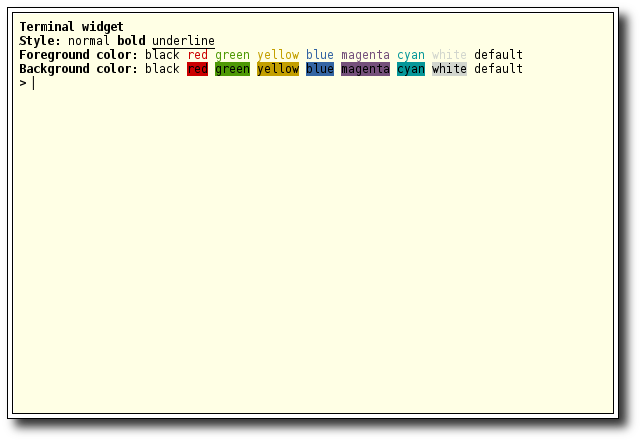

glut-terminal.cc

#include "object.h"
#if defined(__APPLE__)
#include <Glut/glut.h>
#else
#include <GL/glut.h>
#endif
#include <iostream>
#include "terminal.h"
TerminalPtr terminal = TerminalPtr (new Terminal);
void on_key_press (unsigned char key, int x, int y) {
terminal->key_press (key);
glutPostRedisplay();
}
void on_special_key_press (int key, int x, int y) {
unsigned char k = 0;
switch (key) {
case GLUT_KEY_UP: k = 'i'-'a' + 1; break;
case GLUT_KEY_DOWN: k = 'j'-'a' + 1; break;
case GLUT_KEY_LEFT: k = 'b'-'a' + 1; break;
case GLUT_KEY_RIGHT: k = 'f'-'a' + 1; break;
case GLUT_KEY_HOME: k = 'a'-'a' + 1; break;
case GLUT_KEY_END: k = 'e'-'a' + 1; break;
default: k = 0; break;
}
terminal->key_press (k);
glutPostRedisplay();
}
void display (void) {
glClearColor (1,1,1,1);
glClear (GL_COLOR_BUFFER_BIT | GL_DEPTH_BUFFER_BIT);
glBlendFunc (GL_SRC_ALPHA, GL_ONE_MINUS_SRC_ALPHA);
terminal->render();
glutSwapBuffers();
}
void reshape (int width, int height) {
glViewport (0, 0, width, height);
glutPostRedisplay();
}
void terminal_event (Terminal *terminal, std::string input) {
terminal->print (std::string("You typed: \"") + input + "\"\n");
}
int main (int argc, char **argv) {
glutInit (&argc, argv);
glutInitDisplayMode (GLUT_DOUBLE | GLUT_RGB | GLUT_DEPTH);
glutCreateWindow ("Terminal");
glutReshapeFunc (reshape);
glutDisplayFunc (display);
glutKeyboardFunc (on_key_press);
glutSpecialFunc (on_special_key_press);
glutReshapeWindow (600,400);
terminal->set_margin (Margin(5,5,5,5));
terminal->set_radius (0);
terminal->set_size (1, 1);
terminal->set_gravity (1,1);
terminal->set_position (1,1);
terminal->set_fg_color (0,0,0,1);
terminal->set_bg_color (1,1,.9,1);
terminal->set_br_color (1,1,.9,1);
terminal->print ("\033[01mTerminal widget\033[00m\n");
terminal->print ("\033[01mStyle:\033[00m normal \033[01mbold\033[00m \033[04munderline\033[00m\n");
terminal->print ("\033[01mForeground color:\033[00m "\
"\033[30mblack\033[00m " \
"\033[31mred\033[00m " \
"\033[32mgreen\033[00m " \
"\033[33myellow\033[00m " \
"\033[34mblue\033[00m " \
"\033[35mmagenta\033[00m " \
"\033[36mcyan\033[00m " \
"\033[37mwhite\033[00m " \
"\033[39mdefault\033[00m\n");
terminal->print ("\033[01mBackground color:\033[00m "\
"\033[40mblack\033[00m " \
"\033[41mred\033[00m " \
"\033[42mgreen\033[00m " \
"\033[43myellow\033[00m " \
"\033[44mblue\033[00m " \
"\033[45mmagenta\033[00m " \
"\033[46mcyan\033[00m " \
"\033[47mwhite\033[00m " \
"\033[49mdefault\033[00m\n");
terminal->set_prompt ("\033[01m> \033[0m");
terminal->connect (terminal_event);
glutMainLoop();
return 0;
}